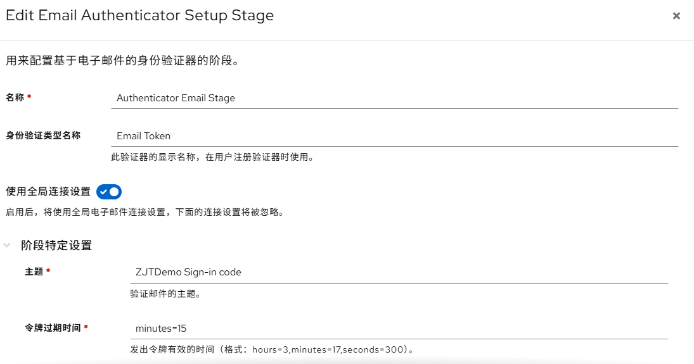
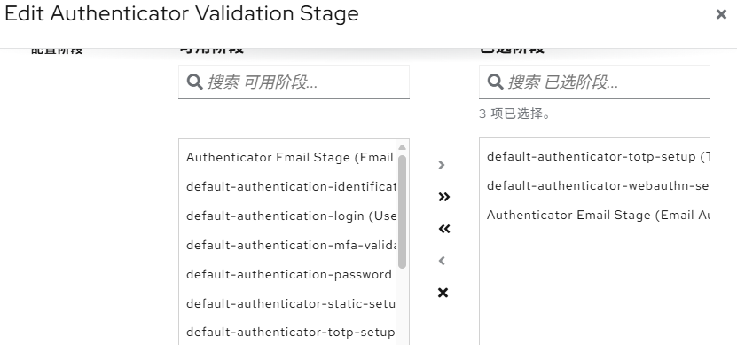
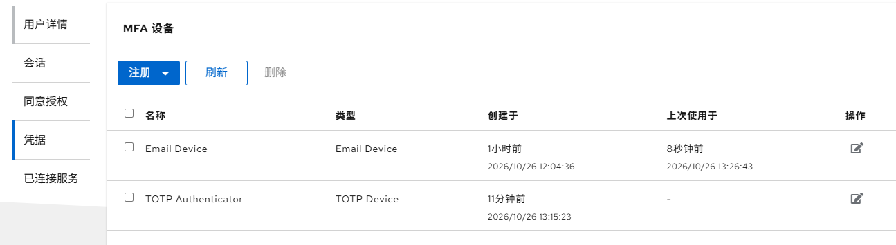
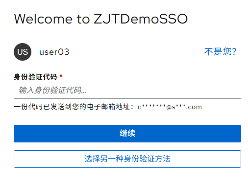
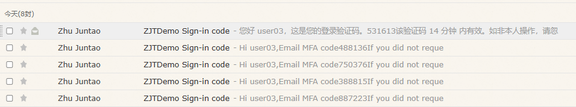
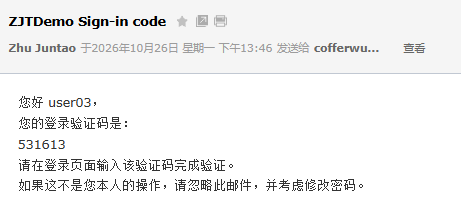

概述
本文记录为 authentik 配置邮箱验证码作为第二因素（Email MFA）的完整流程：SMTP 配置 → 创建邮件验证器 Stage → 在 MFA 验证阶段启用 Email → 绑定认证流 → 自定义邮件模板 → 验证。
核心提醒：只创建 Email Stage 是不够的。必须把它加入 MFA validation stage 的 Configuration stages，并勾选 Email Authenticators 设备类，登录时才会真正发送验证码。这是最常见的漏配点。
一、配置 SMTP
在 .env 中添加邮箱配置（465 端口对应 SSL）：
AUTHENTIK_EMAIL__HOST=mail.ksomail.com
AUTHENTIK_EMAIL__PORT=465
AUTHENTIK_EMAIL__USE_SSL=true
AUTHENTIK_EMAIL__USE_TLS=false
AUTHENTIK_EMAIL__USERNAME=jt.zhu@[邮箱后缀已隐藏]
AUTHENTIK_EMAIL__PASSWORD=
AUTHENTIK_EMAIL__FROM=jt.zhu@[邮箱后缀已隐藏]
AUTHENTIK_EMAIL__TIMEOUT=10
说明：邮箱后缀（域名部分）已做脱敏处理，实际部署时请替换为贵单位的邮件域名。
测试邮件是否能正常发出：
docker compose run --rm worker ak test_email jt.zhu@[邮箱后缀已隐藏]
或进入 worker 容器后在内部执行：
docker compose exec worker /bin/bash
ak test_email jt.zhu@[邮箱后缀已隐藏]
SSL 与 TLS 不要同时开启：465 用
USE_SSL=true/USE_TLS=false；587 则相反。
二、创建 Authenticator Email Stage
路径：Flows & Stages → Stages → Create → Authenticator Email Stage（部分版本名为 Email Authenticator Setup Stage）。
| 字段 | 建议值 |
|---|---|
| Name | email-mfa-setup |
| Friendly name | 邮箱验证码 |
| Token expiry | minutes=10（验证码有效期，别太长） |
| Subject | 你的验证码（或留默认） |
| Template | 留空用内置默认 |
| From address | 留空 → 使用 .env 的 FROM |
| Use global settings | 勾选（继承第 1 步的 SMTP） |
| Configure Flow | 可留空（仅「用户自助添加设备」时才需要） |
它的作用：用户被要求注册 Email MFA 时，authentik 向用户档案中的 email 发送验证码，用户回填后完成注册。

三、在 MFA 验证阶段启用 Email（最关键）
编辑 default-authentication-mfa-validation（Flows & Stages → Stages）：
| 字段 | 必须设置 |
|---|---|
| Device classes | 勾选 Email Authenticators（可同时勾 TOTP / Static Tokens） |
| Not configured action | Configure（强制注册；测试期别用 Deny） |
| Configuration stages | 把第 2 步创建的 Email Stage 加入 Selected Stages |
| Last auth threshold | 默认 5 分钟即可 |
| Timeout | 默认即可 |
只建 Stage、不把它加进 Configuration stages，或者不勾 Device classes，登录时都不会发 token。

四、绑定认证流与用户邮箱
1. 绑定到认证流（SAML 登录实际走这条）
Flows & Stages → Flows → default-authentication-flow → Stage Bindings，确认 default-authentication-mfa-validation 已存在，且顺序在密码验证之后。
注意：第 2 步的 Email Stage 不要直接绑到这里，它是通过 validation stage 的 Configuration stages 间接调用的。
2. 用户 email 必须正确
Directory → Users → 目标用户 → Email 字段是 token 的接收地址。LDAP 同步用户需确认 mail 属性已正确映射，不能为空。
五、验证
用一个尚未绑定 MFA 的测试用户：
- 无痕窗口打开
https://auth.example.com。 - 输入账号密码 → 应出现「选择验证方式」，其中包含 Email 选项。
- 选择 Email → 页面提示「已发送验证码到 xxx@邮箱」。
- 查收邮件（含垃圾箱）→ 回填验证码 → 完成登录。
只有用户注册了邮箱认证时才会触发发送 token 邮件；注册多种认证方式时，登录页会列出多个选项供选择。


六、自定义邮件模板
进入自定义模板目录并创建邮件 HTML：
cd ~/.docker/compose/authentik/custom-templates
sudo mkdir email
cd email
sudo vi email_otp.html
email_otp.html 示例：
{% load i18n %}
<style>
body { font-family: Arial, "Microsoft YaHei", sans-serif; font-size: 14px; color: #212124; line-height: 1.6; }
.box { max-width: 480px; margin: 0 auto; padding: 24px; border: 1px solid #e0e0e0; border-radius: 6px; }
.code { font-size: 32px; letter-spacing: 8px; font-weight: 700; color: #1a73e8; text-align: center; padding: 16px 0; }
.muted { color: #888; font-size: 12px; }
</style>
<div class="box">
<p>您好 {{ user.username }}，</p>
<p>您的登录验证码是：</p>
<div class="code">{{ token }}</div>
<p>请在登录页面输入该验证码完成验证。</p>
<p class="muted">如果这不是您本人的操作，请忽略此邮件，并考虑修改密码。</p>
</div>
如需修改纯文本预览内容，编辑 email_otp.txt：
{% load i18n %}{% load humanize %}{% autoescape off %}
{% blocktrans with username=user.username %}您好 {{ username }}，这是您的登录验证码。{% endblocktrans %}
{{ token }}
{% blocktrans with expires=expires|timeuntil %}该验证码 {{ expires }} 内有效。如非本人操作，请忽略此邮件。{% endblocktrans %}
-- authentik
{% endautoescape %}
配置完成后重建容器使模板生效：
docker compose up -d --force-recreate server worker


七、排障清单
| 现象 | 检查点 |
|---|---|
| 登录时不出现 Email 选项 | Device classes 是否勾选 Email Authenticators |
| 完全没有发邮件 | Email Stage 是否加入 validation stage 的 Configuration stages |
| SMTP 连接失败 | SSL/TLS 组合是否正确，密码是否正确，ak test_email 是否通过 |
| 收不到邮件 | 用户 email 是否为空，垃圾箱/反垃圾网关是否拦截 |
| 验证码提示过期 | Token expiry 是否过短，服务器时间是否同步 |
本文由 WorkBuddy AI 编辑整理。